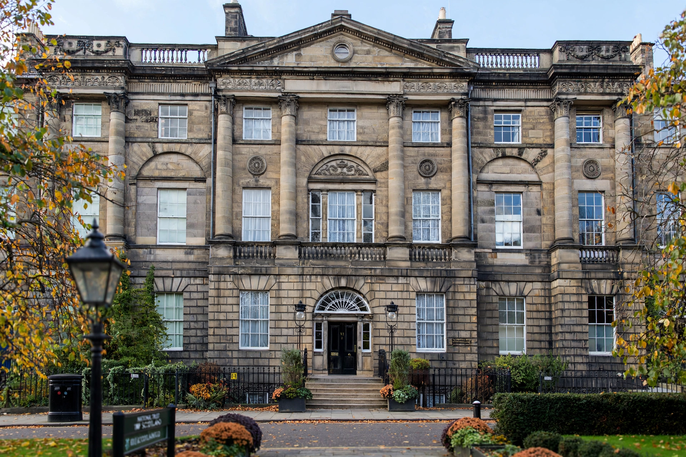

 Bute House, 6 Charlotte Square | |
| Address | 6 Charlotte Square, Edinburgh, Scotland |
|---|---|
| Architect | Robert Adam (Charlotte Square design) |
| Built | 1790s (as part of Charlotte Square) |
| Current use | Official residence of the First Minister of Scotland |
| Owner | National Trust for Scotland (held for the nation) |
| Listing | Category A listed building |
Bute House (Gaelic: Taigh Bhòid) is the official residence of the First Minister of Scotland, located at 6 Charlotte Square in the New Town of Edinburgh. The Georgian townhouse, part of Robert Adam's celebrated Charlotte Square — often described as one of the finest Georgian squares in Europe — is owned by the National Trust for Scotland and held in trust for the nation.
Charlotte Square was designed by Robert Adam in 1791 and completed over the following decades; No. 6 was built in the 1790s as one of a palace-fronted terrace of townhouses. The house was acquired by John Crichton-Stuart, 4th Marquess of Bute, in the 20th century, and in 1966 the Marquess gifted it to the National Trust for Scotland, stipulating that it should serve as an official residence — first for the Secretary of State for Scotland, and after devolution for the First Minister of Scotland.
Since the establishment of the Scottish Parliament in 1999, Bute House has been the Edinburgh residence of the First Minister and the venue for meetings of the Scottish Cabinet and official receptions. The house is known for its Adam-style interiors, including the drawing room where Cabinet meetings take place.